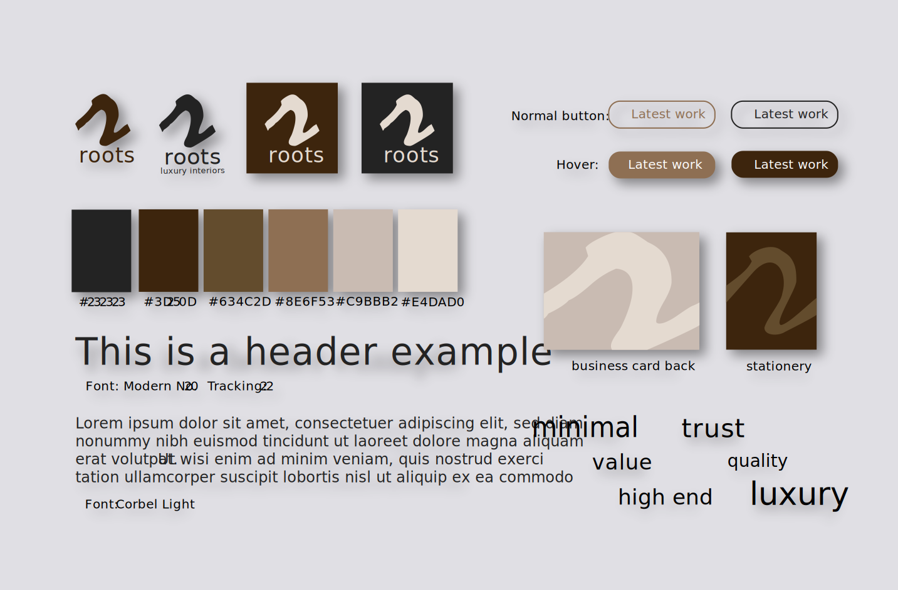
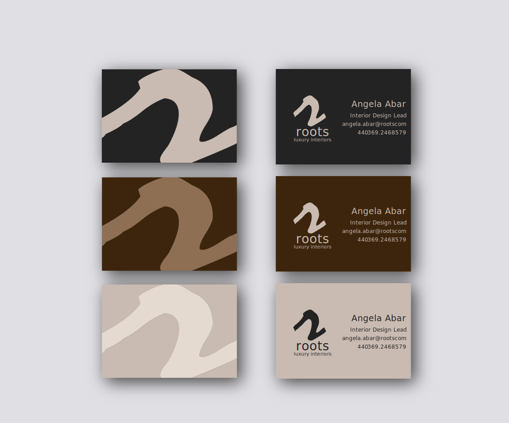
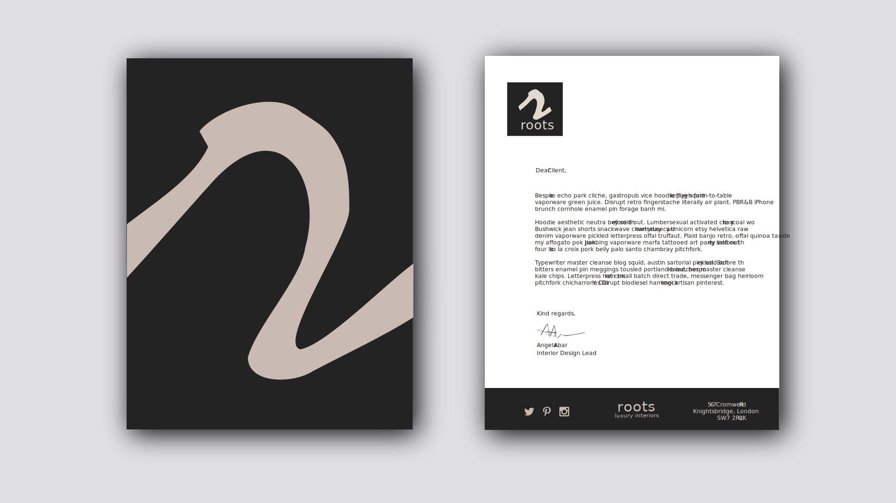
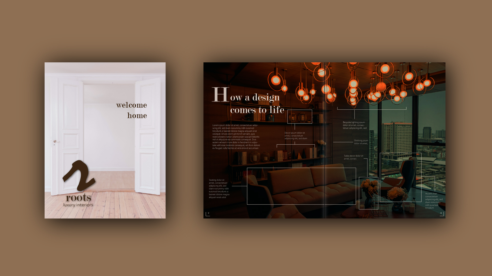

Roots Luxury Interiors
Roots is a fictional, luxury interior design company based in London, UK. The task was to create company branding and deliver a website mock-up, brochure design and stationary set. It is based off a sample project brief found online.
All designs in this project were created with Adobe Illustrator and images are from Unsplash.
The Client
Roots is a high-end design company that specializes in sourcing high quality, tailor-made pieces for wealthy clients. Their projects are large and most often run over L100,000. Roots values perfection, attention to detail, and prefers a minimalist aesthetic. Creative direction for this branding project suggested a monochrome colour palette, with minimal accompanying colours, and a design that allowed their product photography to take centre-stage.
Key words
Luxury, trust, quality, high-end
Process
Brand
With minimalism and luxury in mind I began to research colour palettes and fonts, and began to design the logo.
Colour Palette: I decided on the subdued brown and grey palette shown in the style tile. It was just the right balance of monochrome and colour; the deep browns and black contrasted with the lighter greys to emanate a luxurious, clean, and warm feeling.
Font: I chose a serif header font and a light, sans-serif body font to convey the trustworthy and minimal nature of Roots.
Logo: In my research I noticed many other brands with the name Roots included plant root motifs in their logos. I decided to avoid this because it was not what I would expect from a luxury, high-end brand, and I believed it would not inspire trust from potential wealthy clients. The final logo consists of a simple, script-style lowercase “r”, with sans-serif Roots name and tagline below.
Stationary
The “r” motif from the logo is used throughout the branding, particularly on the stationary. It has been modified to fit the resolution of the business cards and 8 ½ X 11 page, and to give the appearance of an elegant, effortless stroke of a pen.
Business cards: Three colour combinations were produced so Roots staff could whichever colours suit them best. The side that includes the staff member’s name and contact information was designed with increased negative space to give the logo and text room to breathe, adding to the feeling of luxury and quality. It was important to keep in mind that the text and background should be high contrast to ensure readability.
Letterhead: Business letters can often look boring and outdated. For Roots I created a modern and minimal letterhead. I have included extra negative space, like with the business cards, so the letter content does not overwhelm the reader. High contrast dark gray and white make the letterhead feel classy and sophisticated; it would be recommended to print on a high quality paper. The large “r” motif page could be used as a cardboard folder to present documents to clients.
Website mock-up

Minimalism, focus on photography, and negative space were kept top of mind while designing the website. It was important for the site to showcase Root’s furniture and fixtures, as well as design case studies created by Roots designers.
Upon visiting the site, a potential client would be greeted by a large hero image, featuring a photo of a space created by Roots. There are few buttons to click so the user can spend less time figuring out how to navigate the site and more time taking in the beautiful products and interior designs. It is easy to find Root’s work, collections, and unique pieces. The dark, warm browns of the colour palette are used to accent the light background, and photos and text are given lots of space and room to breathe.
Roots’ values of tailor-made design and high quality are placed front and centre on the home page.
Brochure
The Roots brochure could be produced as a printed version or as a digital PDF available on their website.
In this example brochure, the title page invites the reader into what could be their new, high-end, beautiful space.
The spread is inspired by Roots’ love of case studies and showing potential clients how they create their interiors. The brown colour palette is extended into the photo, which consumes both pages in the spread. Light-coloured text is overlaid on the image, highlighting the individual pieces that were used to create this custom-designed high-rise space.
Conclusions
My design process resulted in a well-rounded set of branding materials for this fictional company. As I mainly focus on web and UI design I have had limited exposure to branding design, but I enjoyed the process of creating the brand and visual design from only a project brief. Working through this project taught me a lot about branding and introduced me to unfamiliar concepts like “style tiles”.
I used only Adobe Illustrator to produce the pieces. This helped me to improve my skills in creating logos and mock-ups. An issue I faced, however, was that it was often time-consuming to copy repeating elements in Illustrator. Going forward I would consider using Adobe XD or Figma for UI design, as they allow you to create reusable components, quickly create grids, and enable you to create prototypes.
Overall I believe I was able to translate the client’s personality and requirements into brand that truly suits their values of luxury, minimalism, and quality.